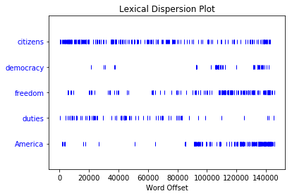
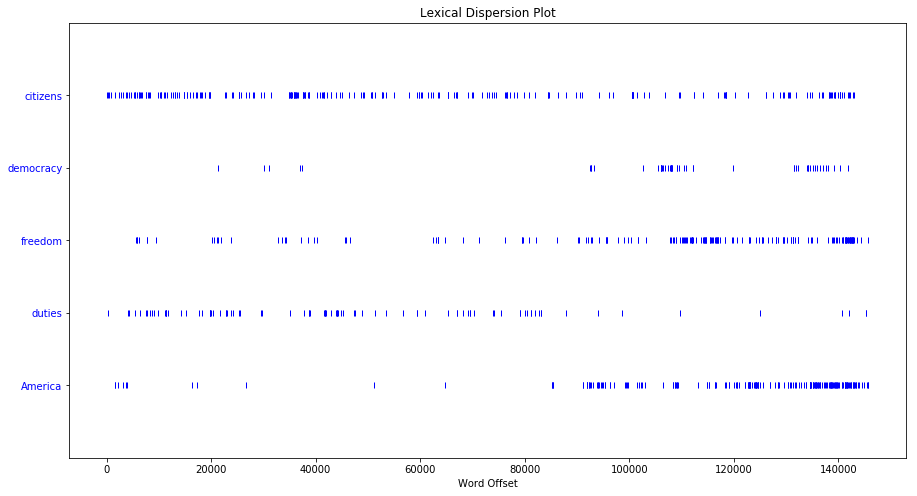

第一章 语言处理与Python
先搞个小计算
1+5*2-3
8
有什么书呢？
from nltk.book import *
*** Introductory Examples for the NLTK Book ***
Loading text1, ..., text9 and sent1, ..., sent9
Type the name of the text or sentence to view it.
Type: 'texts()' or 'sents()' to list the materials.
text1: Moby Dick by Herman Melville 1851
text2: Sense and Sensibility by Jane Austen 1811
text3: The Book of Genesis
text4: Inaugural Address Corpus
text5: Chat Corpus
text6: Monty Python and the Holy Grail
text7: Wall Street Journal
text8: Personals Corpus
text9: The Man Who Was Thursday by G . K . Chesterton 1908
看一看
text1
<Text: Moby Dick by Herman Melville 1851>
text2
<Text: Sense and Sensibility by Jane Austen 1811>
text1.concordance("monstrous")
Displaying 11 of 11 matches:
ong the former , one was of a most monstrous size . ... This came towards us ,
ON OF THE PSALMS . " Touching that monstrous bulk of the whale or ork we have r
ll over with a heathenish array of monstrous clubs and spears . Some were thick
d as you gazed , and wondered what monstrous cannibal and savage could ever hav
that has survived the flood ; most monstrous and most mountainous ! That Himmal
they might scout at Moby Dick as a monstrous fable , or still worse and more de
th of Radney .'" CHAPTER 55 Of the Monstrous Pictures of Whales . I shall ere l
ing Scenes . In connexion with the monstrous pictures of whales , I am strongly
ere to enter upon those still more monstrous stories of them which are to be fo
ght have been rummaged out of this monstrous cabinet there is no telling . But
of Whale - Bones ; for Whales of a monstrous size are oftentimes cast up dead u
text1.similar("monstrous")
true contemptible christian abundant few part mean careful puzzled
mystifying passing curious loving wise doleful gamesome singular
delightfully perilous fearless
text2.similar("monstrous")
very so exceedingly heartily a as good great extremely remarkably
sweet vast amazingly
text2.common_contexts(["monstrous", "very"])
a_pretty am_glad a_lucky is_pretty be_glad
text4.dispersion_plot(["citizens", "democracy", "freedom", "duties", "America"])

图太小不好看，调一调
import pylab
pylab.rcParams['figure.figsize'] = (15.0, 8.0)
text4.dispersion_plot(["citizens", "democracy", "freedom", "duties", "America"])

len(text3)
44764